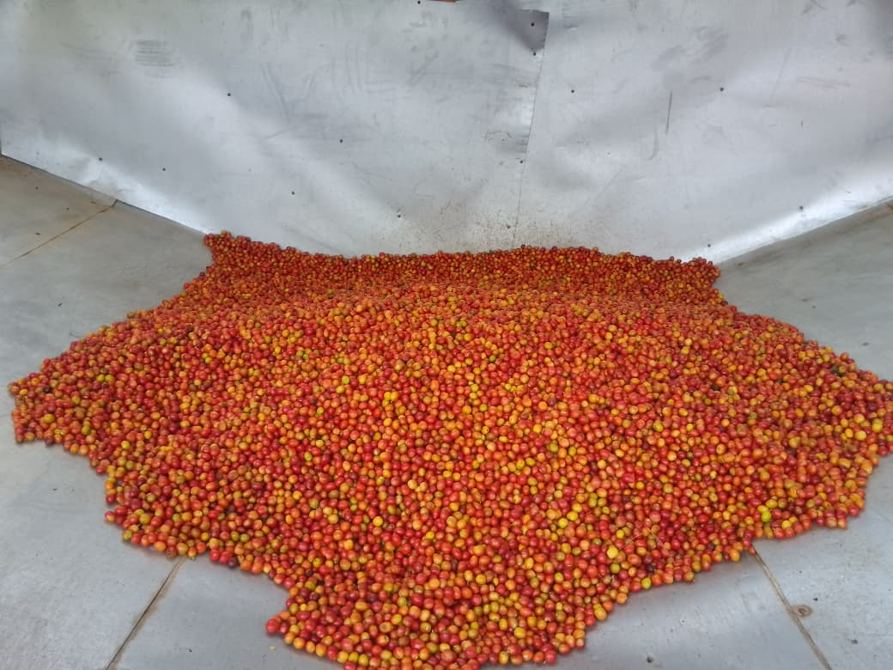

September 2026
A big day at the collection point
Ripe cherry spread out for sorting before it heads to the wet mill. Days like this are why the delivery records matter — every kilo tracked back to the farmer who brought it.
Field notes from Bombo Coffee Farm · Nandi County, Kenya
A running log of life on the farm: what is ripening, what came in at the wet mill, and how the harvest is moving. The management system keeps the numbers; this is the picture.

September 2026
Ripe cherry spread out for sorting before it heads to the wet mill. Days like this are why the delivery records matter — every kilo tracked back to the farmer who brought it.

September 2026
Red and green cherry crowding the branches as the main crop ripens. When they turn fully red, picking begins and the season’s batches start flowing through the system.